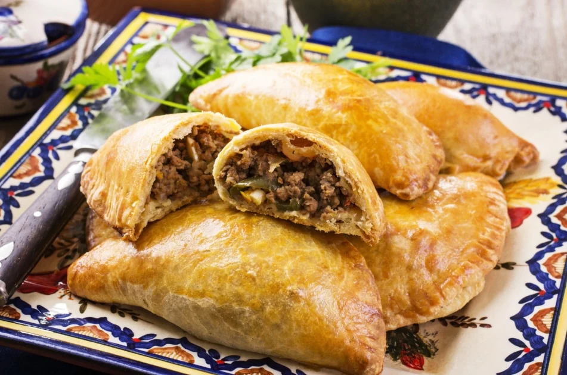

Empanadas (South America)

Description
Empanadas are a popular pastry in many South American countries, with
variations in fillings and preparation methods. They consist of dough
stuffed with a variety of ingredients such as beef, chicken, cheese, or
vegetables, then baked or fried. Empanadas are enjoyed as a snack or a
meal and reflect the diverse culinary influences found across the
continent. Each country has its unique twist on the empanada, making it a
versatile and beloved dish throughout South America.
Some ingredients
Dough (can be made from flour, water, salt, and butter or lard)
Fillings (such as ground beef, chicken, cheese, or vegetables)
Onions
Garlic
Spices (such as cumin, paprika, and oregano)
Hard-boiled eggs (optional, common in some variations)
Olives or raisins (optional, depending on regional variations)
Steps to make Empanadas
-
Make Dough: Mix flour, salt, butter (or lard), and water. Let rest.
-
Prepare Filling: Cook ground meat with onions, garlic, and spices.
- Assemble: Fill dough circles with meat, fold, and seal edges.
-
Cook: Bake at 375°F (190°C) for 20-25 minutes or fry until golden.